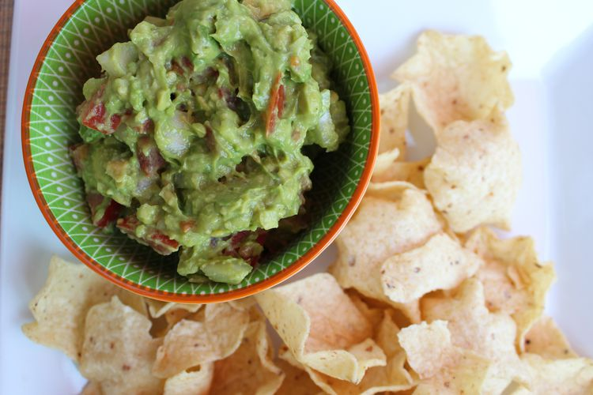

Guacamole Recipe:

About This Guacamole
It's FREAKING Guacamole!
Cooking Tools and Ingredients For Guacamole
- Potato Masher
- Medium serving bowl
- Chopping board
- Knife for chopping onion
- 2 Ripe avocados
- 1 Small onion
- 1 lime cut in 2 halves
- 1 clove of minced garlic
- Salt and pepper
- Red pepper flakes
Instructions for making your guacamole
- Cut open your avocados, throw away the pits and scoop out the mesocarp (the part people eat) and toss it in to the serving bowl
- Now that the avocado is in the bowl start mashing away
- Chop your onion up in to nice small pieces
- In the bowl, mix in your onion and garlic
- Squeeze the juice of the lime in to the bowl
- Add the salt, pepper, and red pepper flakes to your personal tastes
- Mix everything together
- Cover and rest for 30 minutes
- Enjoy with chips or some delicious tacos!
Return To Main Page